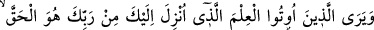
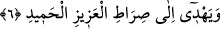
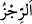
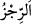
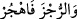
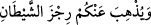
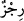
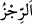
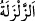

olmadığını, dolayısıyla kendileri için sevab ve ceza olmayacağını zannettiler. Bu âyet
mânâ bakımından şu âyete benzer: “Yoksa kötülükleri yapanlar bizden
kaçabileceklerini mi sandılar?” (el-Ankebût, 29/4)” el-Müfredât’ta başka bir yerde
şöyle denilmiştir: “Yâni bizim indirdiğimiz âyetler hakkında bize acziyet izhâr ve ispat
etmek için gayret edenler için.”
Bu yüzden “en kötüsünden, elem verici” elem vermesi şiddetli “bir azap vardır.”
“ kötü azab demektir. Yâni onlara kötü azâb cinsinden bir azab vardır. “
kelimesi pislik, şirk ve putlar mânâsına da gelir. Nitekim Allah Teâlâ: “
“Putları terk et!” (el-Müddessir, 74/5) buyurmuştur. Çünkü putlar insanı azaba
sürükler. Kezâ “ şeytanın pisliğini (verdiği vesveseyi) sizden
gidermek… için” (el-Enfâl, 8/11) âyetinde şeytanın hilesini “ diye
isimlendirmiştir. Çünkü o azabın sebebidir.
el-Müfredât’ta der ki “ kelimesinin asıl anlamı titremektir. Bu kelime âyette “ (sarsıntı)” kelimesi gibidir/ona benzer.
6. Kendilerine ilim verilenler, Rabbinden sana indirilenin (Kur’an’ın) gerçek
olduğunu bilir; onun, mutlak galip ve övgüye lâyık olan (Allah’ın) yoluna ilettiğini
görürler.
Bu âyet yeni bir söz başlangıcı olup Allah’ın âyetlerini iptal etmeye çalışan câhillere
karşı ilim sahiplerini şâhid ve delil göstermek için getirilmiştir. “Kendilerine ilim
verilenler,” Yâni Rasûlullah (s.a.)’in ashâbından ilim sâhibi olanlar ve ümmetin
âlimlerinden onlara tâbi olanlar veya ehl-i kitab âlimlerinden Abdullah b. Selam ve
Ka’bu’l-Ahbâr ve benzerleri.
Birinci görüş daha açıktır. Çünkü sûre Mekkî’dir. Nitekim et-Tekmile’de böyle
geçmektedir.
“Rabbinden sana indirilenin” yâni nübüvvet, Kur’an ve hikmetin “gerçek olduğunu
bilir; onun, mutlak galip ve övgüye lâyık olan (Allah’ın) yoluna ilettiğini görürler.”
Bu yol tevhid ve takvâ elbisesini giyinme yoludur.
“Azîz ve Hamîd olan(Allah’ın) yolu” ifâdesi hem korku (rahbet) hem de teşvik
(rağbet) ifâde eder. Çünkü Azîz/mutlak galib olan kendisini yalanlayandan intikam alır.
Hamîd/övgüye lâyık olan ise kendisini tasdik edeni mükâfatlandırır.
Buradan anlaşılmaktadır ki İslâm dini, Melik ve Allâm (her şeyin mâliki ve her şeyi